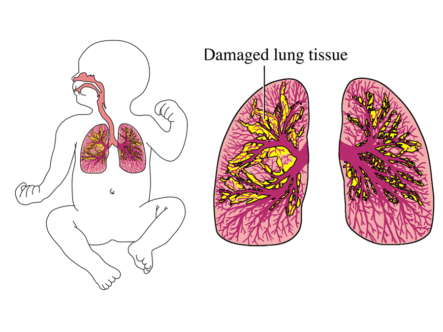

Bronchopulmonary dysplasia

CAUSES
In most cases, this disorder develops after a premature baby receives additional oxygen or has been on a breathing machine (mechanical ventilator). When a baby is born too early, his lungs have not fully grown and oxygen is needed. This helps the baby breathe more easily. But giving oxygen under pressure — such as through a ventilator — can sometimes hurt the air sacs in the lungs. This can lead to bronchopulmonary dysplasia.The disorder can also occur in infants who had an infection before or shortly after birth.
SYMPTOMS
Symptoms of bronchopulmonary dysplasia include:
- Breathing that is fast or difficult
- Shortness of breath
- Pauses in breathing that last for a few seconds (apnea)
- Nostrils flare while breathing
- Grunting while breathing
- Wheezing
- Skin pulling in between the ribs or collar bones (retractions)
- Bluish color of the skin (cyanosis) – due to low oxygen levels in the blood
DIAGNOSIS
To diagnose this disorder
- Your baby’s symptoms
-
How premature your baby is
-
Your baby’s need for oxygen after a certain age
They may also use the following tests:
-
Chest X-ray, CT scan or MRI – to see if the lungs are growing as they should
-
Blood test – to look at oxygen and carbon dioxide levels in the blood and look for infection
-
Echocardiogram (echo) – an ultrasound test to view the heart and find out if a heart problem is causing your baby’s breathing trouble
-
Pulse-oximetry- to continuously look at oxygen levels in the blood
TREATMENTS
Treatment for this chronic lung disease of prematurity can include:
- Mechanical ventilator (breathing machine) – if long-term use is needed, your child may need a tracheostomy (a surgically placed breathing tube in the windpipe)
-
Oxygen
-
Nutrition therapy – to make sure your baby is getting enough nutrition to grow properly. Some babies will need a g-tube (gastrostomy tube) to allow nutrition to go through a tube directly into the stomach
-
Medications